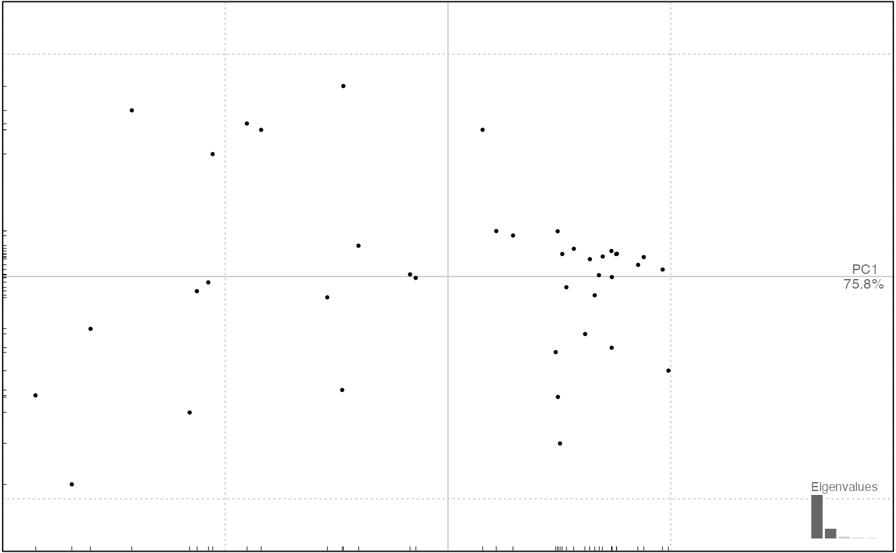
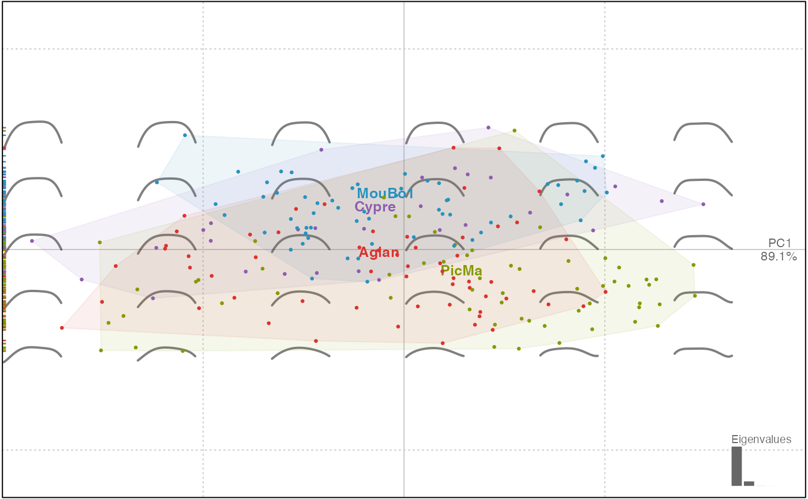
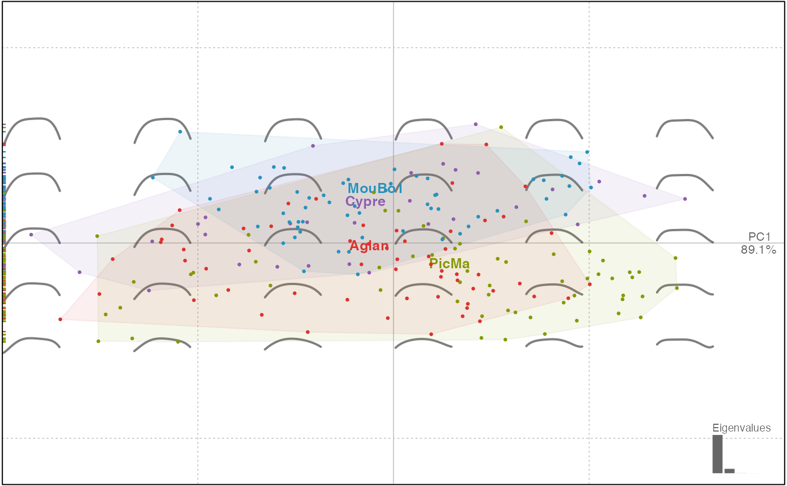
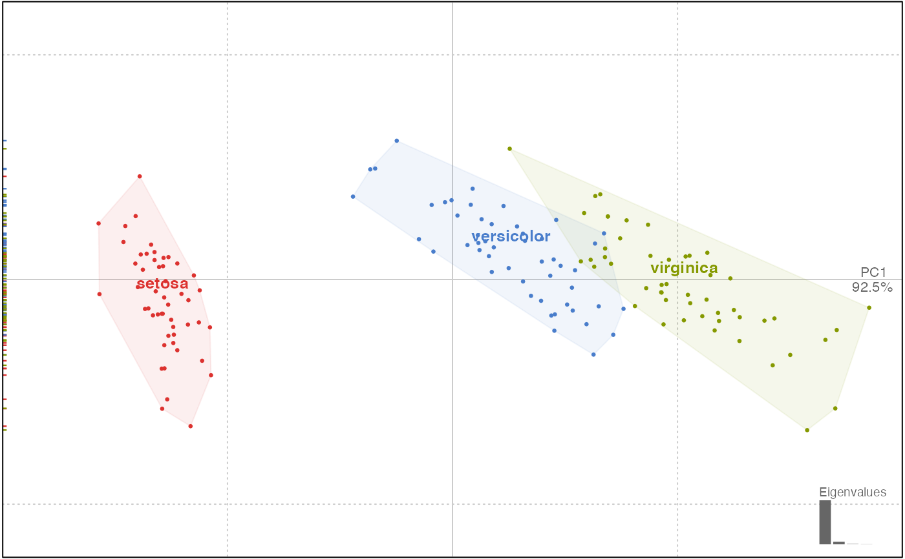
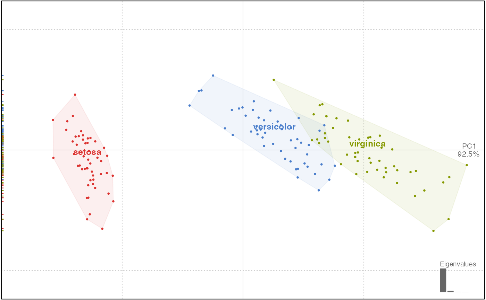

Usage
PCA(x, scale., center, fac)
# S3 method for class 'OutCoe'
PCA(x, scale. = FALSE, center = TRUE, fac)
# S3 method for class 'OpnCoe'
PCA(x, scale. = FALSE, center = TRUE, fac)
# S3 method for class 'LdkCoe'
PCA(x, scale. = FALSE, center = TRUE, fac)
# S3 method for class 'TraCoe'
PCA(x, scale. = TRUE, center = TRUE, fac)
# Default S3 method
PCA(x, scale. = TRUE, center = TRUE, fac = dplyr::tibble())
as_PCA(x, fac)Value
a 'PCA' object on which to apply plot.PCA, among others. This list has several
components, most of them inherited from the prcomp object:
sdevthe standard deviations of the principal components (i.e., the square roots of the eigenvalues of the covariance/correlation matrix, though the calculation is actually done with the singular values of the data matrix)eigthe cumulated proportion of variance along the PC axesrotationthe matrix of variable loadings (i.e., a matrix whose columns contain the eigenvectors). The function princomp returns this in the element loadings.center, scale the centering and scaling usedxPCA scores (the value of the rotated data (the centred (and scaled if requested) data multiplied by the rotation matrix))other components are inherited from the
Coeobject passed toPCA, egfac,mshape,method,baseline1andbaseline2, etc. They are documented in the corresponding*Coefile.
Details
By default, methods on Coe object do not scale the input data but center them. There is also a generic method (eg for traditional morphometrics) that centers and scales data.
See also
Other multivariate:
CLUST(),
KMEANS(),
KMEDOIDS(),
LDA(),
MANOVA(),
MANOVA_PW(),
MDS(),
MSHAPES(),
NMDS(),
classification_metrics()
Examples
bot.f <- efourier(bot, 12)
#> 'norm=TRUE' is used and this may be troublesome. See ?efourier #Details
bot.p <- PCA(bot.f)
bot.p
#> A PCA object
#> --------------------
#> - 40 shapes
#> - $method: [ efourier analysis ]
#> # A tibble: 40 × 2
#> type fake
#> <fct> <fct>
#> 1 whisky a
#> 2 whisky a
#> 3 whisky a
#> 4 whisky a
#> 5 whisky a
#> 6 whisky a
#> # ℹ 34 more rows
#> - All components: sdev, rotation, center, scale, x, eig, fac, mshape, method, cuts.
plot(bot.p, morpho=FALSE)
#> will be deprecated soon, see ?plot_PCA

plot(bot.p, 'type')
#> will be deprecated soon, see ?plot_PCA
 op <- npoly(olea, 5)
#> 'nb.pts' missing and set to: 91
op.p <- PCA(op)
op.p
#> A PCA object
#> --------------------
#> - 210 shapes
#> - $method: [ npoly analysis ]
#> # A tibble: 210 × 4
#> var domes view ind
#> <fct> <fct> <fct> <fct>
#> 1 Aglan cult VD O10
#> 2 Aglan cult VL O10
#> 3 Aglan cult VD O11
#> 4 Aglan cult VL O11
#> 5 Aglan cult VD O12
#> 6 Aglan cult VL O12
#> # ℹ 204 more rows
#> - All components: sdev, rotation, center, scale, x, eig, fac, mshape, method, mod, baseline1, baseline2, cuts.
plot(op.p, 1, morpho=TRUE)
#> will be deprecated soon, see ?plot_PCA

wp <- fgProcrustes(wings, tol=1e-4)
#> iteration: 1 gain: 53084
#> iteration: 2 gain: 0.1323
#> iteration: 3 gain: 0.056732
#> iteration: 4 gain: 0.00012401
#> iteration: 5 gain: 0.038609
#> iteration: 6 gain: 0.018221
#> iteration: 7 gain: 0.0014165
#> iteration: 8 gain: 6.1489e-06
wpp <- PCA(wp)
wpp
#> A PCA object
#> --------------------
#> - 127 shapes
#> - $method: [ procrustes analysis ]
#> # A tibble: 127 × 1
#> group
#> <fct>
#> 1 AN
#> 2 AN
#> 3 AN
#> 4 AN
#> 5 AN
#> 6 AN
#> # ℹ 121 more rows
#> - All components: sdev, rotation, center, scale, x, eig, fac, mshape, method, cuts, links.
plot(wpp, 1)
#> will be deprecated soon, see ?plot_PCA
op <- npoly(olea, 5)
#> 'nb.pts' missing and set to: 91
op.p <- PCA(op)
op.p
#> A PCA object
#> --------------------
#> - 210 shapes
#> - $method: [ npoly analysis ]
#> # A tibble: 210 × 4
#> var domes view ind
#> <fct> <fct> <fct> <fct>
#> 1 Aglan cult VD O10
#> 2 Aglan cult VL O10
#> 3 Aglan cult VD O11
#> 4 Aglan cult VL O11
#> 5 Aglan cult VD O12
#> 6 Aglan cult VL O12
#> # ℹ 204 more rows
#> - All components: sdev, rotation, center, scale, x, eig, fac, mshape, method, mod, baseline1, baseline2, cuts.
plot(op.p, 1, morpho=TRUE)
#> will be deprecated soon, see ?plot_PCA

wp <- fgProcrustes(wings, tol=1e-4)
#> iteration: 1 gain: 53084
#> iteration: 2 gain: 0.1323
#> iteration: 3 gain: 0.056732
#> iteration: 4 gain: 0.00012401
#> iteration: 5 gain: 0.038609
#> iteration: 6 gain: 0.018221
#> iteration: 7 gain: 0.0014165
#> iteration: 8 gain: 6.1489e-06
wpp <- PCA(wp)
wpp
#> A PCA object
#> --------------------
#> - 127 shapes
#> - $method: [ procrustes analysis ]
#> # A tibble: 127 × 1
#> group
#> <fct>
#> 1 AN
#> 2 AN
#> 3 AN
#> 4 AN
#> 5 AN
#> 6 AN
#> # ℹ 121 more rows
#> - All components: sdev, rotation, center, scale, x, eig, fac, mshape, method, cuts, links.
plot(wpp, 1)
#> will be deprecated soon, see ?plot_PCA
 # "foreign prcomp"
head(iris)
#> Sepal.Length Sepal.Width Petal.Length Petal.Width Species
#> 1 5.1 3.5 1.4 0.2 setosa
#> 2 4.9 3.0 1.4 0.2 setosa
#> 3 4.7 3.2 1.3 0.2 setosa
#> 4 4.6 3.1 1.5 0.2 setosa
#> 5 5.0 3.6 1.4 0.2 setosa
#> 6 5.4 3.9 1.7 0.4 setosa
iris.p <- prcomp(iris[, 1:4])
iris.p <- as_PCA(iris.p, iris[, 5])
class(iris.p)
#> [1] "PCA" "prcomp"
plot(iris.p, 1)
#> will be deprecated soon, see ?plot_PCA

# "foreign prcomp"
head(iris)
#> Sepal.Length Sepal.Width Petal.Length Petal.Width Species
#> 1 5.1 3.5 1.4 0.2 setosa
#> 2 4.9 3.0 1.4 0.2 setosa
#> 3 4.7 3.2 1.3 0.2 setosa
#> 4 4.6 3.1 1.5 0.2 setosa
#> 5 5.0 3.6 1.4 0.2 setosa
#> 6 5.4 3.9 1.7 0.4 setosa
iris.p <- prcomp(iris[, 1:4])
iris.p <- as_PCA(iris.p, iris[, 5])
class(iris.p)
#> [1] "PCA" "prcomp"
plot(iris.p, 1)
#> will be deprecated soon, see ?plot_PCA
